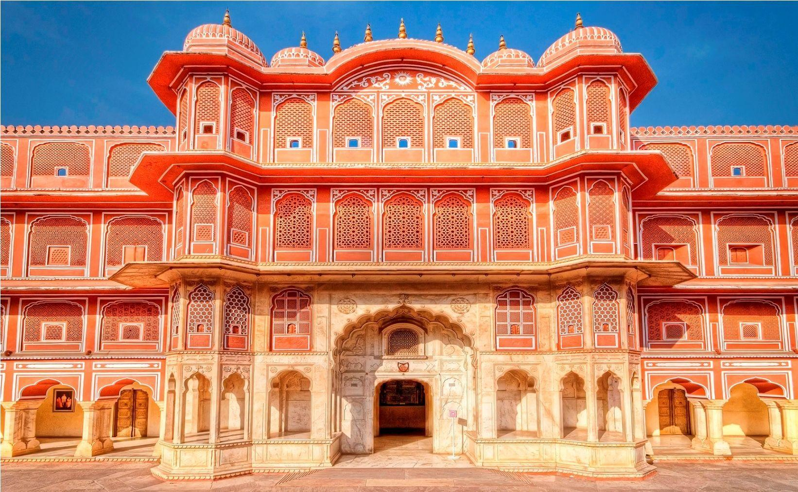
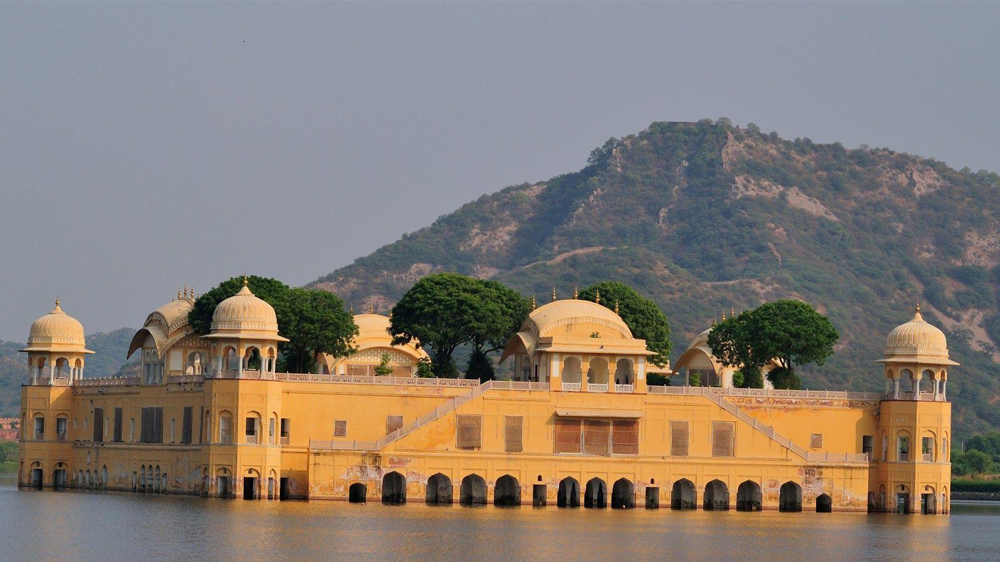

Jaipur is the capital city of the northwestern Indian state of Rajasthan, often referred to as the "Pink City" due to the distinctive pink color of its buildings. Here are some key highlights about Jaipur:
1. Historical Heritage: Jaipur is renowned for its rich history and architectural splendor. It was founded in 1727 by Maharaja Jai Singh II, and its layout was designed according to ancient principles of Vastu Shastra and Shilpa Shastra.
2. City Palace: Located in the heart of the city, the City Palace complex is a magnificent blend of Rajput, Mughal, and European architectural styles. It houses museums showcasing royal artifacts and textiles.
3. Hawa Mahal: One of Jaipur's most iconic landmarks, the Hawa Mahal or "Palace of Winds" is a stunning five-story palace with intricately latticed windows designed for royal women to observe street festivities while remaining unseen.
4. Amber Fort: Situated on the outskirts of Jaipur, Amber Fort (or Amer Fort) is a majestic hilltop fort built with red sandstone and marble. It offers panoramic views of the surrounding hills and houses palaces, courtyards, and the famed Sheesh Mahal (Mirror Palace).
5. Jantar Mantar: A UNESCO World Heritage Site, the Jantar Mantar in Jaipur is an astronomical observatory built by Maharaja Jai Singh II. It features a collection of architectural astronomical instruments, which were used to measure time, predict eclipses, and track celestial bodies.
6. Shopping: Jaipur is a paradise for shoppers, known for its vibrant markets offering traditional handicrafts, textiles, jewelry (especially gemstones and silver), and local artwork. The bustling markets of Johari Bazaar, Bapu Bazaar, and Tripolia Bazaar are popular among tourists.
7. Cultural Vibrancy: Jaipur is steeped in cultural heritage and hosts several festivals throughout the year, including the Jaipur Literature Festival, Jaipur International Film Festival, and Teej Festival, which showcase Rajasthani traditions, music, and dance.
Overall, Jaipur is a captivating destination that blends history, culture, and architectural marvels, making it a must-visit for travelers exploring the vibrant tapestry of Rajasthan.
27,500